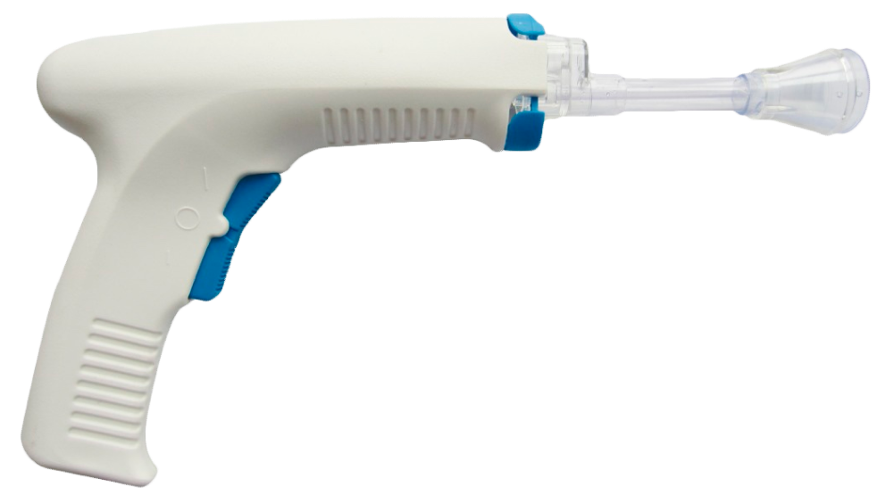

Медичне обладнання для вашої безпеки
Prosit Medical - офіційник представник торгової марки And Tech в Польші. Компанія працює з 2019 року.
Асортимент медичного оборудовання та обладнання більше 100 одиниць.
КонсультаціяОдноразовий медичний імпульсний іригатор

- Легкознімне з'єднання для промивання наконечника
- Перемикач високої та низької швидкості
- Перемикач високої та низької швидкості
450 zł
Замовити
Система для промивання поверхні кістки, використовується:
- в операційному залі
- в авто швидкої допомоги
- у лікувальній кімнаті
- вдома
- в госпіталях (у тому числі і польових)
Система імпульсного промивання використовується у багатьох типах хронічних ран
- діабетичні виразки
- інфіковані хірургічні ділянки
- венозні виразки
- рани різних типів забруднення
- глибокі або тунельні рани
- хімічні опіки або травми
Консультація
Залишилися питання? Дзвоніть нашому менеджеру: +48 889 550 981 +48 889 550 981